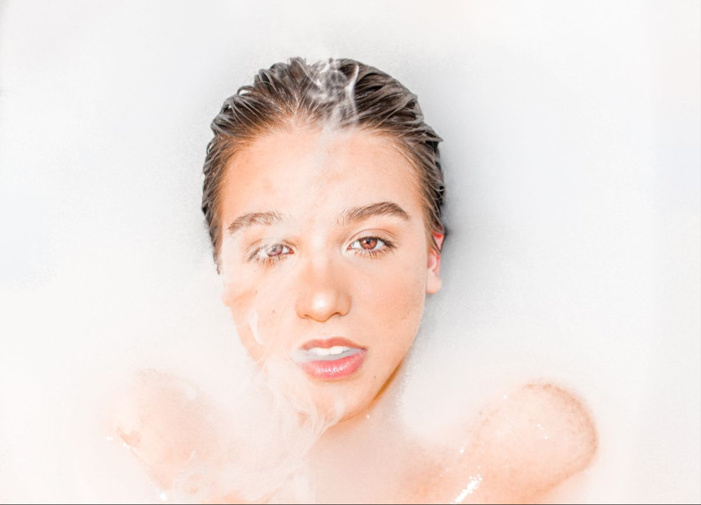

Milk Bath Photoshoot.
1. Pre-shoot planning:
I placed a high priority on effective communication with my client to ensure a clear understanding of their vision and goals for the photoshoot. Together, we crafted a reference Pinterest board, curating images that truly captured the desired aesthetic and provided valuable inspiration for our creative direction. Additionally, I took the lead in finding suitable locations and meticulously organizing the clothing, makeup, and styling for the shoot, drawing from my own experience in handling these aspects. With a hands-on approach, I made sure every detail was thoughtfully considered, resulting in a successful and cohesive photoshoot that beautifully brought my client's vision to life.
2. Day of the photoshoot:
During the milk bathtub photoshoot, I carefully poured the milky ingredients into the tub to create a captivating effect. The milk was adjusted to look inviting without overpowering the composition. I handled the makeup to enhance the subjects' natural beauty, and wisps of smoke were strategically used to add an ethereal atmosphere that complemented the focus on beauty. Throughout the shoot, I monitored and maintained the milk bath, making adjustments as needed. Guiding the model with expertise, I directed her to achieve expressive poses, resulting in a series of images that showcased enchanting beauty amidst the serene milk bath and wisps of smoke. The
3. Post-processing:
I utilized advanced color grading techniques to enhance the colors and tones, ensuring that the milky backdrop looked pristine and visually appealing. Next, I employed precise adjustments in levels, curves, and contrast to fine-tune the overall composition, making subtle enhancements to highlight the subjects' natural beauty and the captivating wisps of smoke. The final step involved skillful non-destructive retouching using frequency separation and dodge and burn techniques to ensure a flawless and polished look without compromising the subjects' genuine features.
4. Client feedback and follow-up:
I valued my client's feedback throughout the post-processing phase, as direct communication played a key role in ensuring their vision was brought to life. By closely engaging with them, I gathered their thoughts and preferences, enabling me to make precise adjustments that aligned with their expectations. I prioritized their satisfaction and gladly reworked any images as per their requests. However, I was delighted to find that this particular client was immensely pleased with the outcome and expressed no need for further adjustments. Their appreciation for the final result was a testament to our effective collaboration and the successful realization of their creative vision.
Self Reflection.
The pre-shoot planning phase taught me that crafting a visual roadmap through a Pinterest board and diving deep into client conversations is like infusing magic into the shoot's DNA. While I managed to wrangle milk and smoke to create captivating visuals, I've come to realize that having a "Plan B" for unexpected hiccups could add an extra sprinkle of preparedness.
And oh boy, the post-processing phase! It's a dance between enhancing those tones and textures while keeping that genuine spark alive. Listening to the client's heartbeat during this phase taught me that collaboration isn't just about smiles; it's about harmonizing visions and fine-tuning until that "Eureka!" moment arrives.